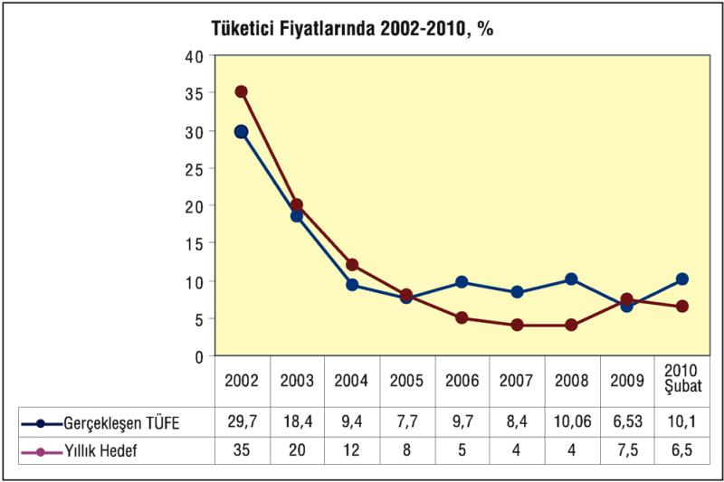
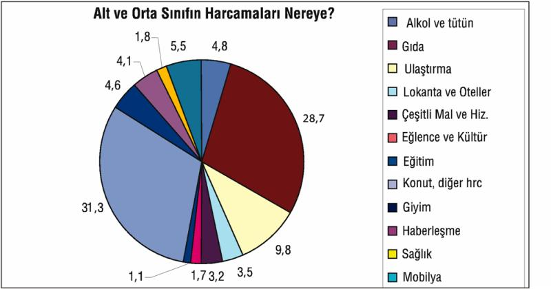
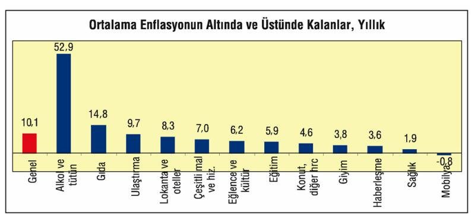

Döviz kurunu, dolayısıyla ithalatı ucuzlatan politikalar, mal ve hizmet fiyatlarını da terbiye etti ve TÜFE, 2004'ten itibaren tek haneye düştü. Açık enflasyon hedeflemesi rejimine geçilen 2006 yılıyla birlikte ise hedeften uzaklaşmaya başlayan enflasyon, küresel krizle birlikte hızla hedefin altına doğru düşmeye başladı.
Ekonomide yaşanan küçülmeden kaynaklanan bu gelişme nedeniyle 2009 sonunda yüzde 6,5 ile yüzde 7,5 olan yıllık hedefin altına inen yıllık enflasyon 2010 yılına ise yükselme eğilimiyle başladı.
Merkez Bankası ve hükümetin yıl sonu için yüzde 6, 5 olarak hedeflediği yıllık enflasyon Ocak ayı sonunda yüzde 8,2, Şubat ayında yüzde 10, 1 olarak gerçekleşti.

Şubat 2010'da yıllık bazda yılda yeniden iki haneye –yüzde 10– çıkan enflasyonun ayrıntısında gizli şeytan, gerçek enflasyonun alt ve orta sınıflar için yüzde 25-30 bandında seyrettiğini sergiledi. Gıda maddeleri genelinde yüzde 15'e ulaşan enflasyon, ailelerin harcamalarında önem taşıyan sebze-meyve, et, süt ürünleri gibi kalemlerde yıllık yüzde 30-35'lik fiyat artışları görmüş durumda. Kışı, doğal gaz zammı zıpkınını yemeden geçiren hanehalkını elektrik ile birlikte sıkı bir enerji zammı beklemektedir. İktidarın benzin, mazot, sigara, içki, cep telefonuna getirdiği ek dolaylı vergiler, bu ürün ve hizmetlerin fiyatını hızla artırdı. Özellikle akaryakıt zamlarının ulaşım fiyatlarına yansıtılmaması mümkün değil.
Talep yetersizliği nedeniyle fiyatlarını enflasyonun epey altına, hatta sıfır artışın altına çeken firmaların nasıl ayakta kalacakları ise ayrı bir mesele. Türkiye sanayiinde istihdam açısından önemli bir yeri olan tekstil, giyimdeki fiyat artışları yüzde 4'ü bile bulmayarak yüzde 10'luk enflasyonun çok altına düştü. Sıfır, en fazla yüzde 2 fiyat artıran; yer yer fiyatta deflasyona giden beyaz eşya, elektronik, otomotiv, mobilya, ev tekstili sektörleri, 2009'daki KDV-ÖTV indirimlerine rağmen ayakta durmakta zorlandılar ve hem iç hem ihracattaki yoksullaştıran fiyatları ile içten içe eridiler.
Görünürden daha yüksek yaşanan enflasyon, sanayi işçilerini yoksullaştırdı. Memurlara verilen ilk ayın yüzde 2,5'luk zammı, açıklanan resmi enflasyon karşısında tutunamadı ve kamu çalışanları arasında da yoksullaşma hızlandı.
Hükümetin bütçe üstünden vergi salma ve sosyal devlet harcamalarını kısma, "hizmetlere katkı payı" adı altında kullanıcılara yük bindirme uygulamaları, hem kamu çalışanlarını hem de kamu hizmeti kullanıcısı yurttaşı istismar ediyor.
Resmi enflasyonun 2010 Şubat ayı itibariyle yeniden iki rakama çıkarak yüzde 10'u aşması bile tek başına endişe yaratırken, alt ve orta sınıfı oluşturan nüfusun yüzde 60'ının gerçek enflasyonu yüzde 30'ları buluyor, ancak TÜİK'in analize kattığı 426 madde içinde alt ve orta sınıfın tüketim sepetine hiç girmeyen ya da tüketimini ertelediği mallardaki ucuzlatma, gerçek enflasyonu kamufle ediyor, karartıyor.

TÜİK'in 2008 Hanehalkı Tüketim Harcamaları anketine göre, alt ve orta sınıfı oluşturan yüzde 60'lık nüfus, harcamalarının yüzde 29'a yakınını mutfağa, gıda harcamalarına ayırıyor. Bu kalemde yıllık enflasyon yüzde 15'e yakın gerçekleşti ama, en çok tüketilen sebze, et, süt ve süt ürünlerinde fiyatların yüzde 30-35 arasında arttığı görülüyor. En yakıcı zamlar ise dolaylı vergileri artırılan içki ve sigarada yaşandı. Alt ve orta gelirlilerin bütçelerinde yüzde 5'e yakın payı olan bu kalem, yüzde 53'e yakın yıllık zam gördü.
Alt ve orta sınıfın bütçesinin yüzde 10'unu götüren ulaştırma da ortalama enflasyona yakın fiyat artışı yaşandı ama benzine ve mazota yapılan yüzde 20'nin üstündeki zamlar –dolaylı vergi artışından dolayı– metro, belediye otobüsü, dolmuş, taksi, vapur ücretlerine yansıması çok muhtemel.

"Orta direğin" harcamalarında yüzde 31 payı olan kira, ısıtma ve diğer ev giderleri ise yıllık yüzde 5'e yakın artışla, ortalama yüzde 10'luk enflasyonun yarısında kaldı. Ancak, bu kalemdeki düşük seyirde farklı etkenler rol oynadı. Birincisi, ev sahipleri, daireler boşalır ve kiracı bulunmaz diye zamlarda insaflı davrandılar, kimisi de hedef enflasyonun yüzde 5'e düşeceğine güvenerek artışa yüklenmedi. Ancak, artan enflasyonla birlikte kira zamları yeniden gündeme gelebilir. Öte yandan, ev giderlerinin en yakıcısı doğalgazda yıllık yüzde 20'nin üstünde ucuzlama görüldü. Bu, dünya enerji fiyatlarının krizle düşmesi sonucu gerçekleşti. Yeniden büyüme eğilimleri ile bu ithal enerjinin de fiyatı yeniden artacaktır.
Ortalama enflasyonu yüzde 10'da tutan esas kalemler ise, alt ve orta sınıfın tüketim sepetine kolay kolay girmeyen ya da satın almayı bir başka bahara ertelediği ürünler. Örneğin, bilişim-iletişim ürünleri, son 12 ayda fiyat artırmak bir yana, yüzde 24 ila yüzde 5 dolayında ucuzladılar. Keza otomobil fiyatları, ancak yüzde 2,4 artarak yüzde 10 enflasyonun gerisinde kaldı.
Beyaz eşyalar buzdolabı, çamaşır makinesi, bulaşık makinesi, düşük talep karşısında ya yüzde 2 ucuzlatıldı ya da fiyat artışı yüzde 2 dolayında kaldı. Ev tekstilinde, mefruşatta fiyatlar yüzde 10 ucuzlatıldı. Alt orta sınıfın unuttuğu otel-lokanta, eğlence, ortalama enflasyonun altında kalsa da talep görmedi.
Bu kadar fiyat düşürmelere rağmen talep bulmayan sektörlerin dayanma güçleri ise tükeniyor. Yakın gelecekte, bu sektörlerde dikkate değer iflasların, el değiştirmelerin gündeme gelmesi çok muhtemel görünmektedir.
| NE, NE KADAR UCUZLADI, ARTTI? (Yıllık, yüzde ) | |
| Printer | -23, 7 |
| Bilgisayar | -16, 7 |
| Cd Çalar (Mp3 Çalar) | -11, 6 |
| Yemek Odası Takımı | -10, 8 |
| Buzdolabı | -4, 7 |
| Yatak Çift Kişilik | -3, 4 |
| Oturma Odası Takımı | -3, 3 |
| Kombi | -3, 0 |
| Kanepe | -2, 4 |
| Klima | -1, 9 |
| Çamaşır Makinesi | -1, 2 |
| Elektrikli Süpürge | -0, 8 |
| Kamera | 0, 1 |
| Aspiratör | 0, 5 |
| Sağlık | 1, 9 |
| Bulaşık Makinesi | 1, 9 |
| Otomobil (Benzinli) | 2, 4 |
| Halı | 3, 6 |
| Haberleşme | 3, 6 |
| Giyim ve ayakkabı | 3, 8 |
| Motorsiklet | 4, 5 |
| Konut | 4, 6 |
| Eğitim | 5, 9 |
| Fırınlı Ocaklar | 5, 9 |
| Eğlence ve kültür | 6, 2 |
| Otomobil (Dizel) | 6, 7 |
| Fırın | 7, 3 |
| Lokanta ve oteller | 8, 3 |
| Yatak Odası Takımı | 9, 0 |
| Fotoğraf Makinesi | 9, 5 |
| Ulaştırma | 9, 7 |
| TÜFE | 10, 1 |
| Gıda ve alkolsüz içecekler | 14, 8 |
| Alkollü içecekler ve tütün | 52, 9 |